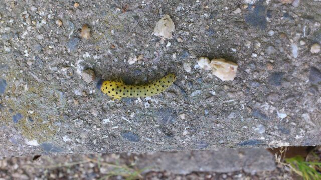

ほいっ♪
こんちくわ。
ろってぃーだよっ*・ω・*/
今日は、
今週土曜日の全国握手会の
リハーサルをしてきました^^
やっぱ歌ったり
踊ったりすることは
楽しいねぇ〜(*^^*)
そんなこんなで、、
最近、
個人PVでは
『よう分からん鳥。』を
お見せしましたが
昨日、まひろマミーから
こんな写メが
送られてきました(・ω・)
・・・

・・・・・
なんぢゃこりゃァァwwww・Д・))!!!
マミー★は
よう分からん虫を
見たらしく、
つい写メってしまったとのこと...。
=・ω・=))にはっ
ほんまに何回見ても
『本間にこの虫
すっげぇえ〜(・ω・；)』
って思うさっ))
にひひっ^ω^♪
だってだって、
きっれぇ〜いな
『水玉模様』だようっ(゜ω゜♪
大阪に在住してる様やし
黒と黄色かぁぁ・・・
この子は
阪神タイガースの
熱狂的なファンなんかなあ?♪
なあっ・ω・))
でもほんとに
気になるっU^(I)^U
いったいこの幼虫さんの
しょうたいはぁ?
知ってるかたぁ〜〜*^ω^*?
教えてほしい〜(⌒‐⌒)